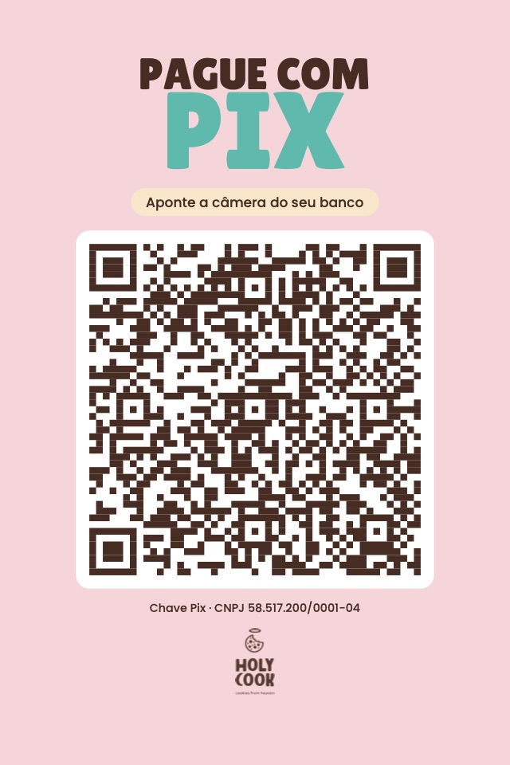

O cliente aponta a câmera do banco, digita quanto vai pagar e confirma. É um QR estático, sem valor fixo — serve para qualquer compra, o dia inteiro, sem precisar gerar código novo a cada venda.
A chave é o CNPJ 58.517.200/0001-04. Se ele for parar em Piracicaba ou Campinas, o dinheiro cai na conta de Paulínia — cada loja precisa do cartaz com a sua própria chave.

O código segue o padrão BR Code do Banco Central — o mesmo que qualquer banco lê. Ele foi conferido de volta: o QR do PDF foi lido por um decodificador e devolveu exatamente esse conteúdo, com o CRC batendo.
A chave aparece escrita embaixo do QR de propósito: se a câmera não pegar, a pessoa copia o CNPJ e paga do mesmo jeito. Para gerar de novo, ou para fazer o de outra loja, é só trocar a chave em gerar-cartaz-pix.py e rodar.